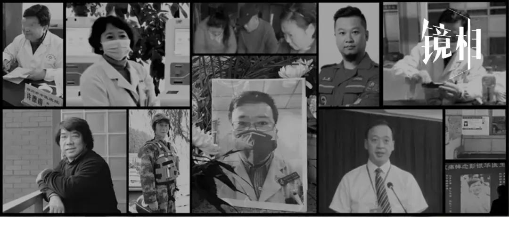
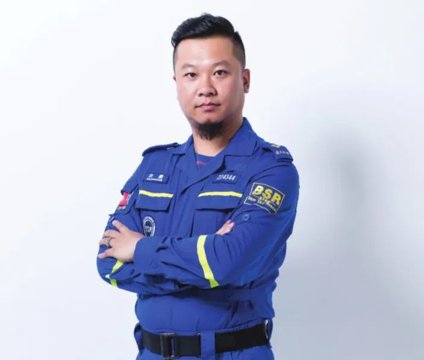
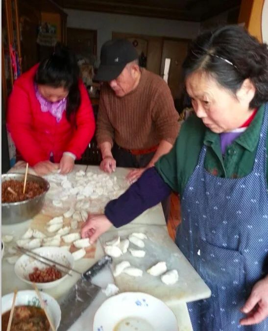
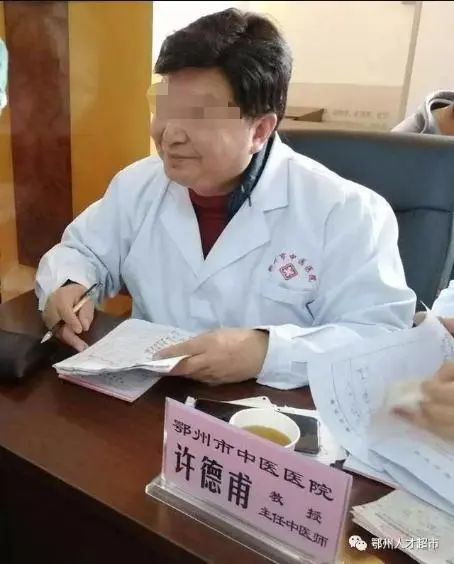
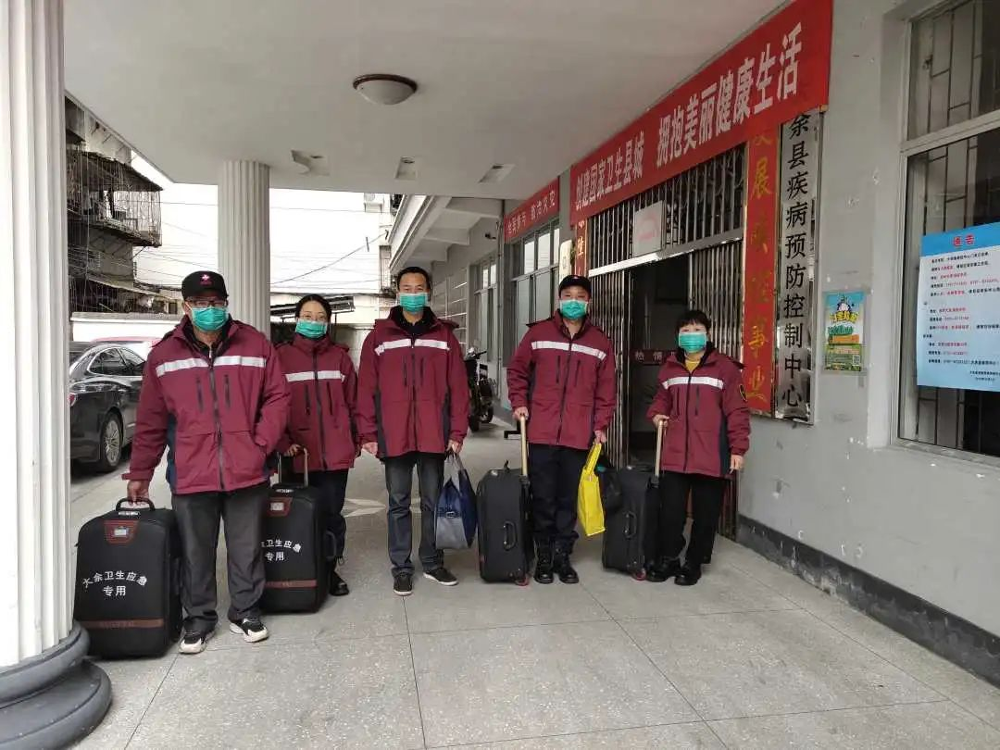
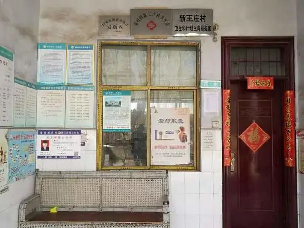
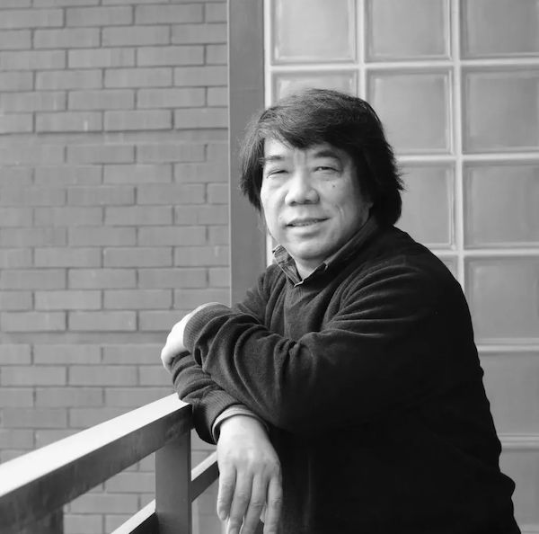

防医院内感染，是一场“苦战”——专访华山医院“医院感染管理科”主任杨帆教授
原文链接 备份链接 有时候半夜突然想到某个可能的漏洞，惊出一身冷汗。 记者 | 黄 祺 抗击新冠肺炎疫情的紧要关头，医院不能失守。 中国疾控中心2月17日的一份研究报告显示，全国已有3019名医务人员感染了新型冠状病毒，其中包括1716 …
以下文章来源于湃客工坊 ，作者镜相工作室
[
湃客工坊
澎湃新闻“湃客”创作者平台 | 更宽广的世界，更丰饶的人生](#)
澎湃新闻 湃客镜相
今天，距武汉封城整整一个月。1月23日，这座千万级人口的码头城市落入漩涡，从四面楚歌到八方驰援，无数的人合力，让局面缓缓扭转。
短时间内，疫情从武汉蔓延到全国。截至2月22日24时，新冠肺炎已造成2442名确诊患者的逝去。此外，还有许多因为疫情而离开的人。在此，我们试图记录下那些被疫情叫停的人生。他们之中，有的是普通人，有的牺牲于抗疫一线，是医者、志愿者，也有令人痛惜的育人者……透过这些生平掠影，是每一个无比重要的人生。
仁心
在漩涡之中，他们是逆流而上的水滴。
封城之后，武汉市内公交系统也几近中断，医务人员的通勤成了难题。何辉加入了志愿者车队，义务接送医务人员上下班。他向家人解释，有力出力。这符合他一贯善良热情的个性，在整个大家族中，他也是顶梁出头的那一个。家人见他的最后一面是在2月2日，同济医院的门诊，被感染的何辉上了救护车准备转院，他朝家人挥手，显示出冷静与坚强。3日晚，玉笋山殡仪馆收到同济医院中法新城院区送来的“摆渡人”何辉的遗体，1965年生，死亡证明写着“呼吸系统衰竭”。
许鹏出门前对儿子说，爸爸去打怪兽了。梳着帅气的背头，留一撮短须，他是英雄老爸，也是江苏蓝天救援队机动队队长。他曾为阜宁风灾、广元沉船、玉树雪灾甚至缅甸、老挝、可可西里等地执行救援任务。2月7日起，他在天河机场一处应急仓库负责向各大医院发放来自全球的抗疫捐赠物资。2月10日，在运送物资的途中，没有躲过一场意外的车祸。大鹏高飞，魂归蓝天。

许鹏 （图源：姑苏晚报）
2005年，武汉人俞关荣意外丧子，这是他决心成为施救者的缘由。他爱好冬泳，2010年，发起成立了长江救援队。这十年，他在长江、汉江、东湖，救起过至少几十名落水者。他是个敬畏生命的人，不抽烟不喝酒，朋友圈签名写着“健康第一”，平时可以在水下憋3分20秒，肺活量惊人。他的微博取名为“大磉”， “磉”即是柱子底下的石礅，寓意坚固平稳。因为新冠肺炎，他逝世于2月6日。

俞关荣
普通人
更多的武汉人，他们过着最最普通的生计，每日被琐事占尽精力。冷也好热也好，活着就好。年年如此，这个新年原本也当如此。
1月28日是武汉市民江寿昌的七十大寿。那时距武汉封城已经5天，女儿江晓辉还是设法订了个蛋糕，她和父亲生日只差3天，爷俩一同庆生。他是一名技术员，后来患了喉癌，挺了过来，转为后勤。日子满了下来。自从中风后，他不怎么出门，就待在家里看警匪片、战争片，维持着波澜不惊的晚年。但人逢寿辰，毕竟是欢欣的一天。江晓辉心怀信心，父亲69岁也熬过，70岁生日也过了，一定还有很多时日。然而三天后，他发起高烧，后来被确诊为新冠肺炎。2月10日，心跳停止，未曾寿昌。
长久以来，林红军在鄱阳街上经营一爿小卖部。武汉中心医院的职工大多数是他的老主顾。他们习惯去他店里赊账，值夜班时买个夜宵。这个黑脸老板，有一张笑眯眯的面孔，爽快地帮忙送货上门，收发快递。小卖部是他的生意，也是他的住所。他守着医院，谁也不知道他是哪天被感染的。从1月31日起，他倒在一张临时病床，勉强维持着，得不到有效救治。一直到2月9日，他才排到一张床位，而当天傍晚，病情恶化，抢救无效。为这位没来得及深交的老友，武汉中心医院疼痛科主任蔡毅写道：“我们都是小人物，在这场疫情的洗礼下，默默地付出，默默地承受着生离死别。”
邱钧的离去更让亲友无从接受。虽然年过七旬，但一直是健身达人，还曾获得过健美冠军的荣誉。十几年前，他的老伴过世，因为健身的爱好，老年生活并不寂寥。老爷子的日常，就是到公园和健身房去锻炼，他拥有傲人的肌肉，从不吝于展示，这是他对抗衰老的证明。即使1月23日封城那天，他也按平时习惯，去往公园锻炼。1月24日他开始感到少有的身体异样，11天后确诊新冠肺炎入院。住院3天后，匆匆离世。家人知道，毕竟72岁了，再强健的肌肉，也耐不住岁数在这了。
邱钧（图源：凤凰网）
曲巧明是2月6日走的，死前意识已经不清，不知道外面发生了什么。家人还记得他意气风发的样子。年轻时，他在武桥重工做工人。硬骨头一个，喝了酒便犯浑。老伴杨来云常细声细气地叹说命苦，怎么嫁了这样的人。老了脾气似乎好些，学着做北方面食，在自家天台侍弄花草，养只狗。再后来，中了风，听力和肾都出了问题，渐渐动不了了。六年来，一直躺在床上，天天靠儿女翻身，搞这搞那。儿女难免有怨气，和老头吵。但该做的义务，经受的苦，是始终认下的。原本，他只是患上普通肺炎，1月16号由家人急忙往协和急诊室一送，他们没有防备交叉感染的知识。事后想来，新冠病毒也许就是从这里潜入老人的脆弱身体。

2010年的春节，曲巧明、杨来云和女儿一起包饺子
余明也是当了一辈子工人，2000年退休。偶尔有人家让他帮忙的活儿，他就接。他老实，话少，和老伴都是朴素的人，退了休也起很早出去买菜。他们是最最典型的普通老百姓，没什么特别的爱好，大部分时间就是坐在家里看电视，在小区里溜达，聊天。大年初三，他没觉出异样，但儿子为保险起见，给父亲量了体温，果然中了招。家人带他去了社区医院，拍了片子，发现双肺感染，被确诊为病毒性肺炎。2月10日，他在去往火神山医院的路上，落下此生的最后一口气。
刘志英是建国后第一批水电工程师，青年时代曾支援边疆，在西藏拉萨水电二队工作。妻子胡梅跟着他入藏，在拉萨当过赤脚医生，做过财务会计。1970年，儿子刘刚在拉萨出生。1979年全家回到武汉。刘章英是家中主心骨，是个通透明白的人，带领着小家蒸蒸日上。多年来，夫妻两人感情甚笃。胡成梅也是个坚强的女人，轻易不愿在家人面前显示脆弱。最后走的时候也是，静悄悄的，在家中卧室没有发出声响。悲痛的刘志英向儿子预言，老伴离开，自己的精神也垮了。三天后他离世。
医者
当哨声在夜空响起时，李文亮已经离开。他发出疫情预警，彰显出可贵的诚实。被感染后，还惦记着康复后再上一线。他离开后，人们翻遍了他的微博，拼凑出这位医生平时的面貌，他喜欢美食，是个数码控，每条微博下方都燃起小小的蜡烛，纪念这位不以勇敢自居的眼科医生。

纪念李文亮
在李文亮之后，另一位倒在一线的是武汉市武昌医院院长刘智明。李文亮或许能叫他一声“学长”，两人同求学于武大。武昌医院为武汉市第一批接收发热病人的定点医院，刘智明曾戴佩着一级防护设备进入过ICU，里面躺着多位疑似新冠肺炎患者，事后他的同事分析，感染或起于当时。他的妻子蔡利萍也是一线护士长，日夜不分地收治病人，丈夫倒下后，她只能靠微信追问——我能去陪你吗？我去陪着你好吗？要我照顾你吗？不用，他答。他躺在ICU，白茫茫的病房，烦躁，缺氧，虚汗不止，打了呼吸机后一度好转，认为自己该是死不了。就在几天前，他也是一线上的一员，身为院长，统筹调度，24小时待命，时间仍是不够。最终情况没按预想的走，医者终难自医。2月18日，刘智明走了。

刘智明
被疫情叫停的还有一场永不到来的婚礼。彭银华是武汉江夏区第一人民医院医生，和妻子本打算正月初八举行婚礼。情况有变，他们达成共识：疫情不散，婚期延迟。之后，他请缨参与抗疫。他是呼吸内科医生，必须直面一线患者。他一度连续撑了两天两夜，其间收治了40多位病人。在高强度的状态下，抵抗力毫无预警地下降。1月25日新年第一天，彭银华入院， 2月2日，乐观的他还在病房摆出V字形手势，让为自己输血浆的护士拍照留念。他是做好凯旋的准备的。2月20日，心愿未了的彭银华离开人间，抽屉里还放着没来得及派发的喜帖。

同事在纪念彭银华（图源：新华社）
在湖北鄂州，许德甫是颇有名望的老中医，长于诊治肝胆脾胃病。他用药简便廉验，药到病除，网上甚至流传着他所开出的药方。他虽然已退休，但又被鄂州市中医医院返聘为专家，每周坐诊，有时也出义诊。年前，病人量增多，大家总说他的号千金难求。这对于63岁的他，同样也是身心的双重挑战。许德甫的感染路径至今不明，逝世于2月13日。一位叫夏敬明的市民赋诗送行——“瘟疫眼无珠，好人不长生”。

许德甫

天职
毛样洪的倒下是个意外。他是福建浦城县仙阳镇中心卫生院副院长，镇卫生院唯一一位副主任医师、全科大夫。浦城县被称为福建“北大门”，对全省防疫来说，是定要扼守的地理位置。大年初一，轮到他值守高速检查站监测点，从16时到24时，登记车辆信息，检测乘车人员体温。他当晚只吃了一碗泡面，对付对付的意思，儿子在家中等他，妻子在外地工作，此时也在返乡的路上。下午出门前，他换上一身新衣，问儿子帅不帅，晚上21时许，一辆失控的车撞向了他。

毛样红的最后一餐是一盒泡面
这半个月来，清晨5点，蒋金波身着红色制服，戴一只淡蓝色医用口罩，拎着防护设备箱，里面装有防护衣、隔离衣、面瓶、面罩、口罩、鞋套、手套。这是他出门前的行头。他是江西省赣州市大余县疾控中心的医师，疫情期间，负责在隔离病房进行流行病学调查。到达医院清洁区后，他打开设备箱，一一换上，接着走入弥漫着新冠病毒的隔离病房。疫情爆发的二十多天来，他的主要工作，就是与这里的病人一一询问、核实调查病例的基本情况、发病就诊经过、暴露史，确定密切接触者和可疑暴露者。这样的工作节奏持续了十五天。如果不是1月28日，因劳累过度引发的心肌梗死，让他停歇，不知道他还会这样运转多长时间。

蒋金波（左一，图源：经济日报）
急性心肌梗死也带走了村医王土成。他是河南省长葛市下属新王庄村村医。河南的硬核防疫，拆解来看，是千万水滴的汇集。其中的乡村防疫，更是紧要环节。需要王土成做的太多了。一一调查村民的健康状态，测量体温，指导消毒，在群里转发防疫知识，反复呼告。屏幕里翻下来，都是他在刷屏，让人似乎能听得到他在那头声嘶力竭地喊。从2005年取得乡村医生资格证后，他一直留在新王庄村卫生室工作，为两千多村民解除大小病痛。被发现时，他静静地躺在这方陋室的休息间。

新王庄村卫生室（图源：人民网）
正月初一，宋英杰与父母在家中留下合影，他身着熨帖的黑风衣，父母则穿得红火喜庆，新春第一天本就该这么打扮。这是一个不甚富裕的家庭，以种植柠檬树为生。宋英杰是“90后”，家中小儿，粗眉细眼，精瘦干练，本科毕业后在湖南省衡山县下属东湖镇马迹卫生院工作。这是他加入抗击新冠肺炎团队的的第一天，负责在高速路口收费站对过往车辆人员实施体温检测。当地缺乏人手，也兼顾物资分发，来回都是这样琐碎而消磨体力的活。11天后的凌晨，他交班后回到宿舍，心源性猝死悄无声息地带走了这名年轻人。

宋英杰和父母（图源：衡阳晚报）
同事们还记得徐辉走进办公室轻缓的关门音，低沉的讲话声。她是南京市中医医院的副院长，新冠肺炎防治组组长，种种决策，依赖她的拍板定夺。这段日子，即使回家后，电话依然一通接着一通，丈夫只记得她焦灼的语气，大致能想象妻子每日面临的繁重局面。2月6日早上，同事唐暮白听徐辉提起，脚肿了。他劝说她去做个B超检查，她没有去。晚上，因疼痛难忍，她终于决定打一通告假的电话。那是她生命的最后一天。

徐辉

育人者
1953年，19岁的段正澄成为华中工学院（现华中科技大学）成立后招收的第一届大学生，1957年毕业起，留校任教。他说，喻园有我栽下的树。此话不虚，他进校时是校园初创期，他们一帮年轻学生都要参加基建工作，常常是上午种树，下午在工地当小工。1996年，段正澄带领团队研发全球首台全身伽马刀，大大提高杀死肿瘤细胞的精准性，降低对正常器官的损害。这项发明已在全国上百家医院推广。2月15日，段正澄感染新冠肺炎去世。当日，华中科技大学公布，学校的“征程助学金”系段正澄先生用自己的百万元奖金匿名捐助设立。他一生所为一事，以己之力，福泽他人。
离开的师者还有武汉同济医院教授林正斌。他是一名低调的器官移植专家。1983年毕业于同济医学院医疗系，后赴日本金泽医科大学留学。他行事低调，谦和待人，说话细声细语。从事器官移植专业30余年，是国宝级专家。今年他62岁，退了休，本是颐养之年。同事推测，大概率是体内触发的“炎症因子”风暴带走了这位教授。平日的他身体不错，没有什么基础病，理应有悠长的时日享受平静的晚年。
在灰暗的背景下，错落有致地摆放着鲜亮缤纷的水果。日常之物，透过艺术家的笔法下，呈现出庄重平和的生命感。这是刘寿祥的代表作《鲜果》。他是中国当代水彩画界具有影响力的画家之一。1981年毕业于湖北艺术学院美术系师范专业并留校任教，直至2018年退休，培养了大批美术人才。2月13日，他被新冠肺炎掠去生命，而他的作品和艺术精神将会永生。
刘寿祥

结语
因感染新冠肺炎以及抗击疫情牺牲的还有武汉红十字会医院医生肖俊、武汉协和江北医院医生夏思思、泰州市人民医院医生姜继军、武汉武昌医院护士柳帆、湖北电影制片厂导演常凯、华科大教授红凌、一线民警王春天、潘继明、何建华，交警郑勇，辅警王爱兰，基层干部姜娜、黄和艳，政府职工李光剑、社区医生宋云花……我们无法一一道尽所有离开者之名。
我们在渡过漫长的冬天。前方是什么，必定要勇敢走过去，亲身验证。不能犹疑，也不能丧失意志。此处有痛苦，也有胜利。
唯有战而胜之，才能告慰每一个在冬天离开的人，他们都曾热气腾腾地，活过。
本文综合参考了澎湃新闻、北京青年报、中国青年报、红星新闻、南方都市报、经济日报、新京报、荔枝新闻、健康时报等媒体报道
* 为保护隐私，文中余明、柳志英、胡成梅为化名
采访 / 王迪 实习生 胡雅婷
撰文 / 刘成硕
本期编辑 邢潭
推荐阅读


原文链接 备份链接 有时候半夜突然想到某个可能的漏洞，惊出一身冷汗。 记者 | 黄 祺 抗击新冠肺炎疫情的紧要关头，医院不能失守。 中国疾控中心2月17日的一份研究报告显示，全国已有3019名医务人员感染了新型冠状病毒，其中包括1716 …
原文链接 备份链接 我就想站在这里，站在第一线，没有为什么。我觉得，我还可以，我能扛住压力，尽快尽多的救治更多的人、更多的小人物。 2月18日上午10:30左右，武汉武昌医院院长、神经外科专家刘智明因新冠肺炎抢救无效，在同济医院中法新城院 …
原文链接 备份链接 【财新网】（记者 高昱 萧辉）武汉一线已经有1102名医务人员确诊新冠感染，而湖北省全省的感染数1502例。这意味着在武汉和湖北，医务人员感染新冠占当地总感染人数的比例，至2月11日已经达到5.6%（武汉） …
原文链接 备份链接 点击上图，一键下单** 【武汉现场：抗击新冠肺炎】** 记者 | 吴琪 我从没见过这样的汉口火车站。 1月23日，大年二十九。上午8点40分、50分，墙上的时钟往前走，随着一拨拨人上车，庞大的候车大厅，像被一支巨大的 …
原文链接 备份链接 ********** *****从地图上看，鄂州被武汉、黄冈、黄石“包围”，它的面积只有1594平方公里，是湖北省面积最小的地级市，但因武汉、黄冈是湖北疫情最为严重的两个地区，鄂州的疫情也比较严峻。***** 2月8 …